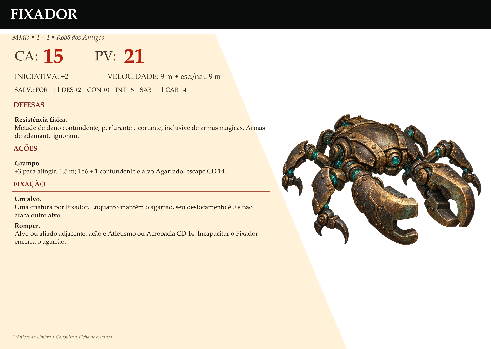
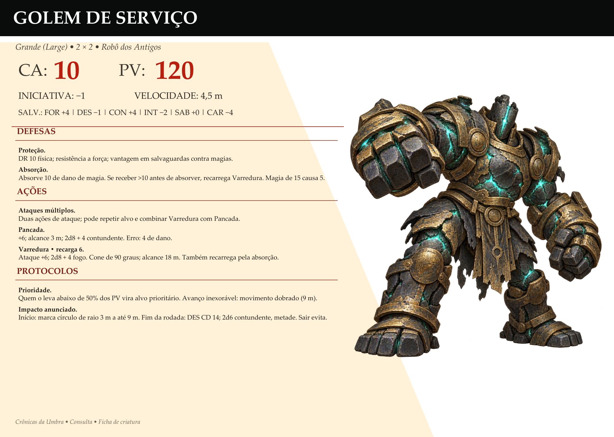
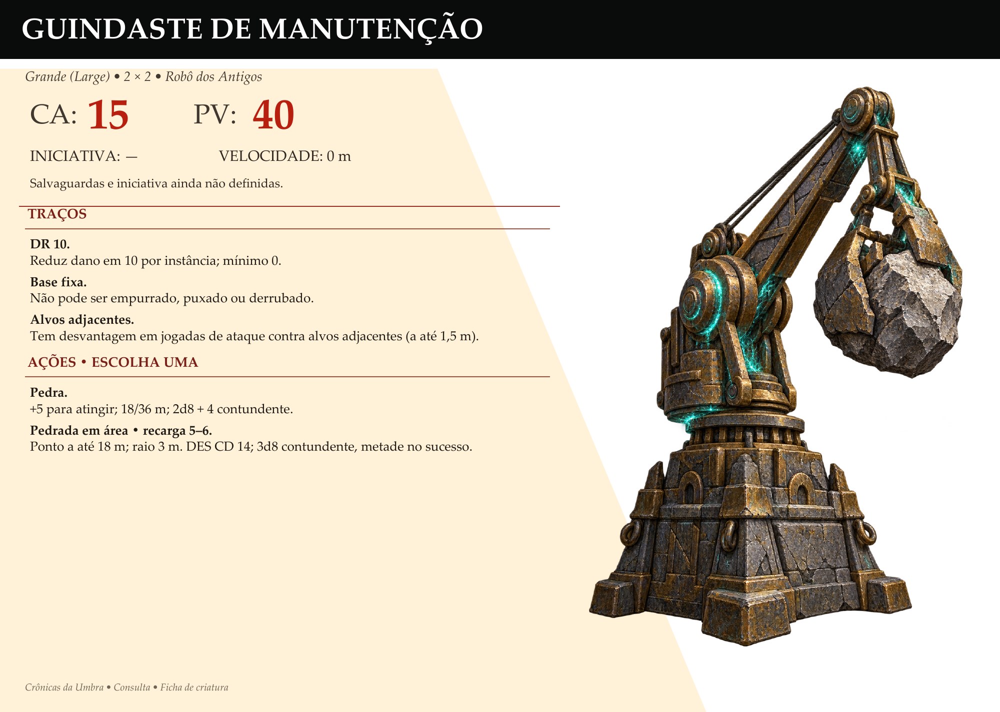
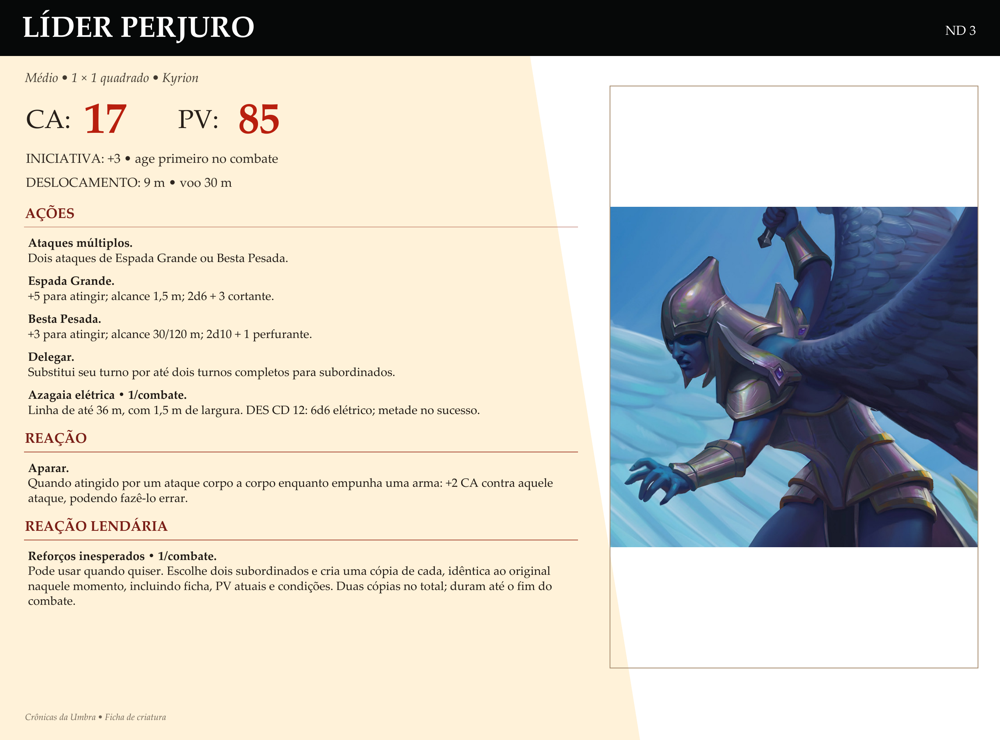
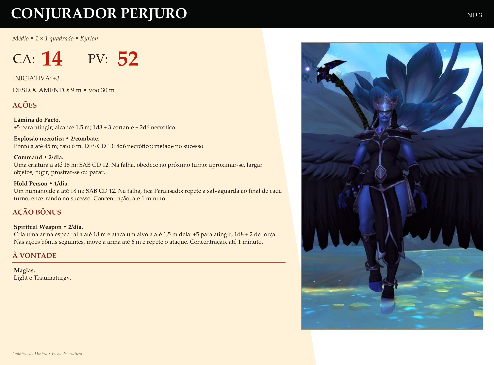
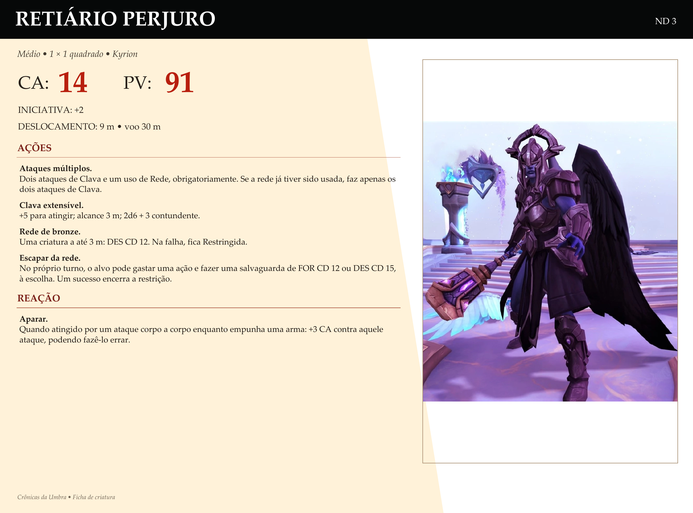

Auxiliar De Manutenção
CA 13 · PV 10 · Deslocamento 7,5 m

Auxiliar De Manutenção Ferramenta +4 para atingir; alcance 1,5 m; 1d6 + 2 contundente. Reparo • 3 usos Outro ser mecânico a até 1,5 m recupera 1d8 + 1 PV. Pode reativar um corpo a 0 PV se ainda estiver em condições adequadas; não recupera um corpo triturado. Cristal Após os três usos, recarregue com um cristal de 100 Anima.
Fixador
CA 15 · PV 21 · Deslocamento 9 m • esc./nat. 9 m


Fixador Resistência física Metade de dano contundente, perfurante e cortante, inclusive de armas mágicas. Armas de adamante ignoram. Grampo +3 para atingir; 1,5 m; 1d6 + 1 contundente e alvo Agarrado, escape CD 14. Um alvo Uma criatura por Fixador. Enquanto mantém o agarrão, seu deslocamento é 0 e não ataca outro alvo. Romper Alvo ou aliado adjacente: ação e Atletismo ou Acrobacia CD 14. Incapacitar o Fixador encerra o agarrão.
Gary
CA 17 · PV 70 · Deslocamento 9 m; escalada 9 m

Gary Gary. Redução de dano 5/−. Ancoragem: deslocamento 0 ao agarrar. Duas pinças independentes. Dois ataques de Grampo +6, 1,5 m, 2d8+4 contundente; agarrar Grande ou menor, escape CD 14. Alvo ou aliado adjacente pode usar ação, Atletismo ou Acrobacia CD 14. Soltar sem ação; incapacitar encerra agarrões. Proteger companheiro: reação, pinça livre, aliado a 1,5 m atingido, +3 CA contra o ataque. CA 17, PV 70, iniciativa +0, deslocamento e escalada 9 m.
Golem De Serviço
Enorme (Huge) · 3 × 3 quadrados · CA 10 · PV 120 · Deslocamento 4,5 m


Golem De Serviço Proteção DR 10 física; resistência a força; vantagem em salvaguardas contra magias. Absorção Absorve 10 de dano de magia. Se receber >10 antes de absorver, recarrega Varredura. Magia de 15 causa 5. Ataques múltiplos Duas ações de ataque; pode repetir alvo e combinar Varredura com Pancada. Pancada +6; alcance 3 m; 2d8 + 4 contundente. Erro: 4 de dano. Varredura • recarga 6 Ataque +6; 2d8 + 4 fogo. Cone de 90 graus; alcance 18 m. Também recarrega pela absorção. Prioridade Quem o leva abaixo de 50% dos PV vira alvo prioritário. Avanço inexorável: movimento dobrado (9 m). Impacto anunciado Início: marca círculo de raio 3 m a até 9 m. Fim da rodada: DES CD 14; 2d6 contundente, metade. Sair evita.
Guindaste De Manutenção
CA 15 · PV 40 · Deslocamento 0 m
Tem desvantagem em jogadas de ataque contra alvos adjacentes (a até 1,5 m).


Tem desvantagem em jogadas de ataque contra alvos adjacentes (a até 1,5 m). Guindaste De Manutenção DR 10 Reduz dano em 10 por instância; mínimo 0. Base fixa Não pode ser empurrado, puxado ou derrubado. Pedra +5 para atingir; 18/36 m; 2d8 + 4 contundente. Pedrada em área • recarga 5–6 Ponto a até 18 m; raio 3 m. DES CD 14; 3d8 contundente, metade no sucesso.
Líder Perjuro
Médio · CA 17 · PV 85 · Iniciativa +3 • age primeiro no combate · Deslocamento 9 m; voo 30 m


Líder Perjuro Ataques múltiplos Dois ataques de Espada Grande ou Besta Pesada. Espada Grande +5 para atingir; alcance 1,5 m; 2d6 + 3 cortante. Besta Pesada +3 para atingir; alcance 30/120 m; 2d10 + 1 perfurante. Delegar Substitui seu turno por até dois turnos completos para subordinados. Azagaia elétrica • 1/combate Linha de até 36 m, com 1,5 m de largura. DES CD 12: 6d6 elétrico; metade no sucesso. Aparar Quando atingido por um ataque corpo a corpo enquanto empunha uma arma: +2 CA contra aquele ataque, podendo fazê-lo errar. Reforços inesperados • 1/combate Pode usar quando quiser. Escolhe dois subordinados e cria uma cópia de cada, idêntica ao original naquele momento, incluindo ficha, PV atuais e condições. Duas cópias no total; duram até o fim do combate.
Conjurador Perjuro
Médio · CA 14 · PV 52 · Iniciativa +3 · Deslocamento 9 m; voo 30 m


Conjurador Perjuro Lâmina do Pacto +5 para atingir; alcance 1,5 m; 1d8 + 3 cortante + 2d6 necrótico. Explosão necrótica • 2/combate Ponto a até 45 m; raio 6 m. DES CD 13: 8d6 necrótico; metade no sucesso. Command • 2/dia Uma criatura a até 18 m: SAB CD 12. Na falha, obedece no próximo turno: aproximar-se, largar objetos, fugir, prostrar-se ou parar. Hold Person • 1/dia Um humanoide a até 18 m: SAB CD 12. Na falha, fica Paralisado; repete a salvaguarda ao final de cada turno, encerrando no sucesso. Concentração, até 1 minuto. Spiritual Weapon • 2/dia Cria uma arma espectral a até 18 m e ataca um alvo a até 1,5 m dela: +5 para atingir; 1d8 + 2 de força. Nas ações bônus seguintes, move a arma até 6 m e repete o ataque. Concentração, até 1 minuto. Magias Light e Thaumaturgy.
Retiário Perjuro
Médio · CA 14 · PV 91 · Iniciativa +2 · Deslocamento 9 m; voo 30 m


Retiário Perjuro Ataques múltiplos Dois ataques de Clava e um uso de Rede, obrigatoriamente. Se a rede já tiver sido usada, faz apenas os dois ataques de Clava. Clava extensível +5 para atingir; alcance 3 m; 2d6 + 3 contundente. Rede de bronze Uma criatura a até 3 m: DES CD 12. Na falha, fica Restringida. Escapar da rede No próprio turno, o alvo pode gastar uma ação e fazer uma salvaguarda de FOR CD 12 ou DES CD 15, à escolha. Um sucesso encerra a restrição. Aparar Quando atingido por um ataque corpo a corpo enquanto empunha uma arma: +3 CA contra aquele ataque, podendo fazê-lo errar.